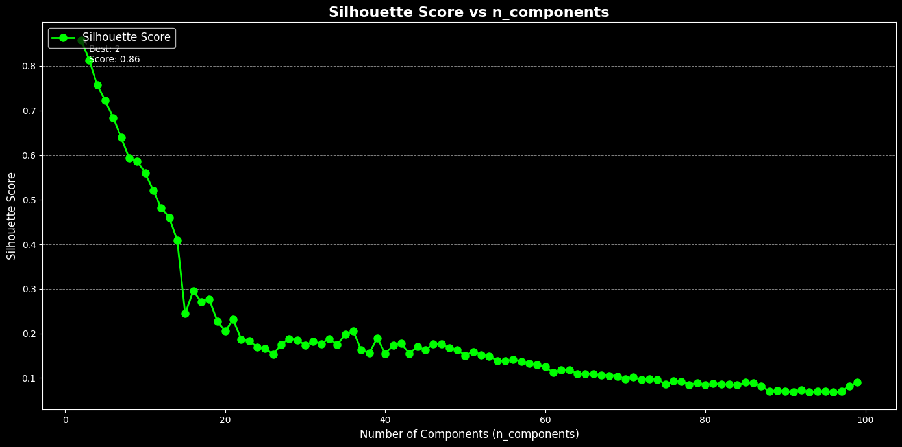
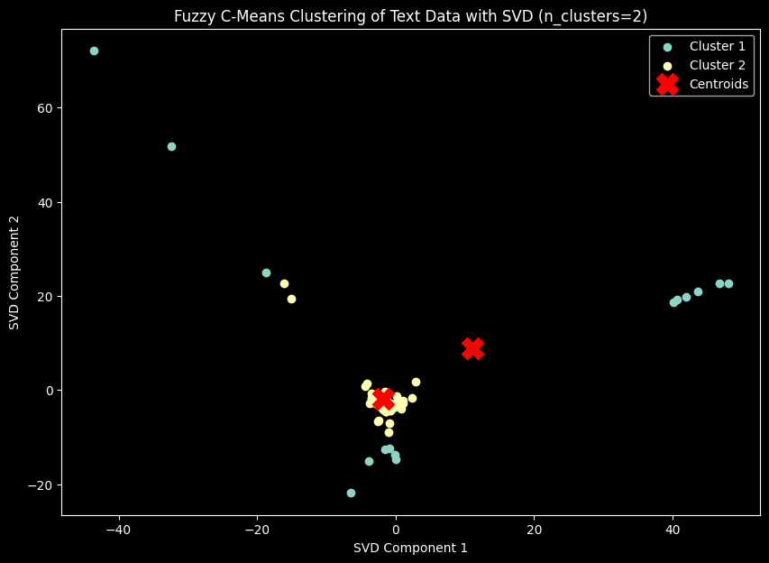
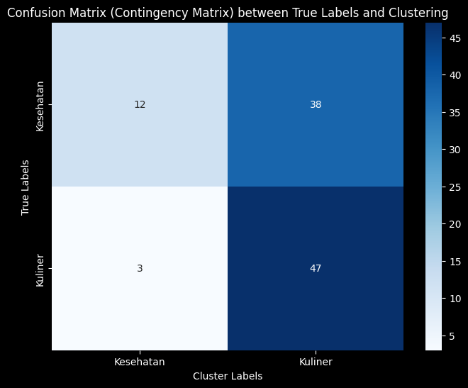

Tugas 8 : Clustering dengan Fuzzy C-means#
Nama : Achmad Baharuddin Akbar
NIM : 210411100001
!pip install fuzzy-c-means
import pandas as pd
import numpy as np
from sklearn.feature_extraction.text import TfidfVectorizer
from sklearn.preprocessing import StandardScaler
from sklearn.decomposition import TruncatedSVD # Import TruncatedSVD untuk reduksi dimensi
import matplotlib.pyplot as plt
from fcmeans import FCM
from sklearn.metrics import silhouette_score
Requirement already satisfied: fuzzy-c-means in /usr/local/lib/python3.10/dist-packages (1.7.2)
Requirement already satisfied: joblib<2.0.0,>=1.2.0 in /usr/local/lib/python3.10/dist-packages (from fuzzy-c-means) (1.4.2)
Requirement already satisfied: numpy<2.0.0,>=1.21.1 in /usr/local/lib/python3.10/dist-packages (from fuzzy-c-means) (1.26.4)
Requirement already satisfied: pydantic<3.0.0,>=2.6.4 in /usr/local/lib/python3.10/dist-packages (from fuzzy-c-means) (2.9.2)
Requirement already satisfied: tabulate<0.9.0,>=0.8.9 in /usr/local/lib/python3.10/dist-packages (from fuzzy-c-means) (0.8.10)
Requirement already satisfied: tqdm<5.0.0,>=4.64.1 in /usr/local/lib/python3.10/dist-packages (from fuzzy-c-means) (4.66.6)
Requirement already satisfied: typer<0.10.0,>=0.9.0 in /usr/local/lib/python3.10/dist-packages (from fuzzy-c-means) (0.9.4)
Requirement already satisfied: annotated-types>=0.6.0 in /usr/local/lib/python3.10/dist-packages (from pydantic<3.0.0,>=2.6.4->fuzzy-c-means) (0.7.0)
Requirement already satisfied: pydantic-core==2.23.4 in /usr/local/lib/python3.10/dist-packages (from pydantic<3.0.0,>=2.6.4->fuzzy-c-means) (2.23.4)
Requirement already satisfied: typing-extensions>=4.6.1 in /usr/local/lib/python3.10/dist-packages (from pydantic<3.0.0,>=2.6.4->fuzzy-c-means) (4.12.2)
Requirement already satisfied: click<9.0.0,>=7.1.1 in /usr/local/lib/python3.10/dist-packages (from typer<0.10.0,>=0.9.0->fuzzy-c-means) (8.1.7)
from google.colab import drive
drive.mount('/content/drive')
Drive already mounted at /content/drive; to attempt to forcibly remount, call drive.mount("/content/drive", force_remount=True).
import pandas as pd
df = pd.read_csv("/content/drive/My Drive/PPW-A/report/tugas-ppw/hasil_preprocesing.csv")
df.head()
| judul | tanggal | isi | kategori | cleansing | case_folding | tokenize | Filtering/stopword removal | |
|---|---|---|---|---|---|---|---|---|
| 0 | 7 Rekomendasi Makanan Pencegah Kanker, Ada Wor... | Rabu, 04 Des 2024 19:19 WIB | Jakarta - Kanker merupakan salah satu penyakit... | Kesehatan | Jakarta Kanker merupakan salah satu penyakit ... | jakarta kanker merupakan salah satu penyakit ... | ['jakarta', 'kanker', 'merupakan', 'salah', 's... | jakarta kanker salah penyakit ditakuti orang p... |
| 1 | Viral Wanita Sering Halu gegara Skizofrenia, P... | Rabu, 04 Des 2024 18:05 WIB | Jakarta - Viral seorang wanita menceritakan pe... | Kesehatan | Jakarta Viral seorang wanita menceritakan pen... | jakarta viral seorang wanita menceritakan pen... | ['jakarta', 'viral', 'seorang', 'wanita', 'men... | jakarta viral wanita menceritakan pengalamanny... |
| 2 | Ilmuwan Teliti Efek Lockdown Pandemi COVID-19 ... | Rabu, 04 Des 2024 17:02 WIB | Jakarta - Sebuah penelitian terbaru mengungkap... | Kesehatan | Jakarta Sebuah penelitian terbaru mengungkapk... | jakarta sebuah penelitian terbaru mengungkapk... | ['jakarta', 'sebuah', 'penelitian', 'terbaru',... | jakarta penelitian terbaru perubahan signifika... |
| 3 | Curhat Warga Vietnam Sewa Pacar gegara Ortu Se... | Rabu, 04 Des 2024 16:01 WIB | Jakarta - Tidak hanya di Korea Selatan dan Jep... | Kesehatan | Jakarta Tidak hanya di Korea Selatan dan Jepa... | jakarta tidak hanya di korea selatan dan jepa... | ['jakarta', 'tidak', 'hanya', 'di', 'korea', '... | jakarta korea selatan jepang tren anak muda ma... |
| 4 | Ramai soal 'Brain Rot', Istilah Kekinian gegar... | Rabu, 04 Des 2024 15:00 WIB | Jakarta - Belakangan ramai soal istilah 'brain... | Kesehatan | Jakarta Belakangan ramai soal istilah brain r... | jakarta belakangan ramai soal istilah brain r... | ['jakarta', 'belakangan', 'ramai', 'soal', 'is... | jakarta ramai istilah brain rot media sosial i... |
texts = df['Filtering/stopword removal']
# Step 2: Vektorisasi TF-IDF
tfidf_vectorizer = TfidfVectorizer(max_df=0.8, min_df=2, ngram_range=(1, 2))
tfidf_matrix = tfidf_vectorizer.fit_transform(texts)
X_tfidf = tfidf_matrix.toarray()
scaler = StandardScaler()
X_scaled = scaler.fit_transform(X_tfidf)
# Mendapatkan nama fitur dari TF-IDF
feature_names = tfidf_vectorizer.get_feature_names_out()
# Konversi TF-IDF hasil training ke DataFrame
df_train_tfidf = pd.DataFrame(tfidf_matrix.toarray(), columns=feature_names)
df_train_tfidf
df_train_tfidf.to_csv("tf-idf.csv", index=False)
X_tfidf.shape
(100, 3529)
from sklearn.metrics import adjusted_rand_score, normalized_mutual_info_score
from fcmeans import FCM
from sklearn.decomposition import TruncatedSVD
from sklearn.preprocessing import StandardScaler
import numpy as np
# Pastikan X_scaled sudah terdefinisi sebelumnya
# Inisialisasi variabel untuk menyimpan hasil
best_silhouette = -1
best_ari = -1
best_nmi = -1
best_n_components = 0
results = {}
# Asumsikan y_true adalah label asli dari dataset Anda
y_true = df['kategori'] # Ganti 'kategori' dengan nama kolom label asli
for n in range(2, 100): # Rentang nilai n_components
svd = TruncatedSVD(n_components=n, random_state=42)
data_reduced = svd.fit_transform(X_scaled)
# Fuzzy C-Means Clustering
fcm = FCM(n_clusters=2, m=1.5, max_iter=1000, error=0.00001, random_state=42)
fcm.fit(data_reduced)
cluster_labels = fcm.predict(data_reduced)
# Evaluasi dengan Silhouette Score, ARI, dan NMI
silhouette = silhouette_score(data_reduced, cluster_labels)
ari = adjusted_rand_score(y_true, cluster_labels)
nmi = normalized_mutual_info_score(y_true, cluster_labels)
results[n] = {
'silhouette': silhouette,
'ari': ari,
'nmi': nmi
}
# Log setiap iterasi
print(f"Iterasi dengan n_components={n}: Silhouette={silhouette}, ARI={ari}, NMI={nmi}")
# Perbarui nilai terbaik
if silhouette > best_silhouette:
best_silhouette = silhouette
best_n_components = n
if ari > best_ari:
best_ari = ari
if nmi > best_nmi:
best_nmi = nmi
Iterasi dengan n_components=2: Silhouette=0.8588551195188908, ARI=0.012148896880163282, NMI=0.09456435533426642
Iterasi dengan n_components=3: Silhouette=0.8137782429821612, ARI=0.012148896880163282, NMI=0.09456435533426642
Iterasi dengan n_components=4: Silhouette=0.7571487186145959, ARI=0.012148896880163282, NMI=0.09456435533426642
Iterasi dengan n_components=5: Silhouette=0.7226637621070542, ARI=0.012148896880163282, NMI=0.09456435533426642
Iterasi dengan n_components=6: Silhouette=0.6842558633294931, ARI=0.012148896880163282, NMI=0.09456435533426642
Iterasi dengan n_components=7: Silhouette=0.6395494297279459, ARI=0.007389132627638759, NMI=0.04469202501254566
Iterasi dengan n_components=8: Silhouette=0.5932438942855692, ARI=0.011460342675592873, NMI=0.05611196255773773
Iterasi dengan n_components=9: Silhouette=0.586155214026078, ARI=0.027958062905641536, NMI=0.07218050712528158
Iterasi dengan n_components=10: Silhouette=0.5600001173744134, ARI=0.027389582698751143, NMI=0.06037580908432075
Iterasi dengan n_components=11: Silhouette=0.5211038529106099, ARI=0.05146807645384303, NMI=0.07973360923467632
Iterasi dengan n_components=12: Silhouette=0.4809930135145709, ARI=0.08344151483951832, NMI=0.11012381882721671
Iterasi dengan n_components=13: Silhouette=0.46020178504693043, ARI=0.07155766131001808, NMI=0.09082968489674628
Iterasi dengan n_components=14: Silhouette=0.40932091726255565, ARI=0.12215158924205378, NMI=0.12458222025879266
Iterasi dengan n_components=15: Silhouette=0.2437665642026939, ARI=0.42995482536145835, NMI=0.356324324338513
Iterasi dengan n_components=16: Silhouette=0.29573059318029526, ARI=0.26338804947296285, NMI=0.2267775588415968
Iterasi dengan n_components=17: Silhouette=0.2704042485961468, ARI=0.3298501311811197, NMI=0.2743987069926899
Iterasi dengan n_components=18: Silhouette=0.2768631639694562, ARI=0.28472468699132264, NMI=0.24196846294651436
Iterasi dengan n_components=19: Silhouette=0.22735949393227092, ARI=0.4036631352127851, NMI=0.329100323955614
Iterasi dengan n_components=20: Silhouette=0.20549608371249012, ARI=0.4036631352127851, NMI=0.329100323955614
Iterasi dengan n_components=21: Silhouette=0.2310725969752699, ARI=0.3536382332778376, NMI=0.291753502652149
Iterasi dengan n_components=22: Silhouette=0.18646954720001852, ARI=0.42986176018023825, NMI=0.3447660573350479
Iterasi dengan n_components=23: Silhouette=0.1833323063158241, ARI=0.3781818181818182, NMI=0.3042340369904945
Iterasi dengan n_components=24: Silhouette=0.168647990945225, ARI=0.3535116074052307, NMI=0.28135366840352244
Iterasi dengan n_components=25: Silhouette=0.1657020451450072, ARI=0.4036144578313253, NMI=0.32392379834363044
Iterasi dengan n_components=26: Silhouette=0.15283783785413138, ARI=0.32965319641319296, NMI=0.26018095459477675
Iterasi dengan n_components=27: Silhouette=0.17512236134137527, ARI=0.30677700519048084, NMI=0.25101673091682575
Iterasi dengan n_components=28: Silhouette=0.18818042155781078, ARI=0.24259734536744995, NMI=0.19927780647054036
Iterasi dengan n_components=29: Silhouette=0.1846731431541557, ARI=0.24259734536744995, NMI=0.19927780647054036
Iterasi dengan n_components=30: Silhouette=0.1738089647857901, ARI=0.2631475859367349, NMI=0.21409369088299846
Iterasi dengan n_components=31: Silhouette=0.1813502719380917, ARI=0.24259734536744995, NMI=0.19927780647054036
Iterasi dengan n_components=32: Silhouette=0.17651205163338413, ARI=0.24259734536744995, NMI=0.19927780647054036
Iterasi dengan n_components=33: Silhouette=0.1883611476890033, ARI=0.24272094190216262, NMI=0.2049456375426203
Iterasi dengan n_components=34: Silhouette=0.17415499652190436, ARI=0.24259734536744995, NMI=0.19927780647054036
Iterasi dengan n_components=35: Silhouette=0.19797444967829514, ARI=0.18584994941748523, NMI=0.15874219849682203
Iterasi dengan n_components=36: Silhouette=0.20465714101062307, ARI=0.13626518850262473, NMI=0.11876912541700375
Iterasi dengan n_components=37: Silhouette=0.16252985485784832, ARI=0.2228641370869033, NMI=0.18514337499882702
Iterasi dengan n_components=38: Silhouette=0.15536126344918727, ARI=0.2228641370869033, NMI=0.18514337499882702
Iterasi dengan n_components=39: Silhouette=0.18924983159054892, ARI=0.13626518850262473, NMI=0.11876912541700375
Iterasi dengan n_components=40: Silhouette=0.15460164478495483, ARI=0.2228641370869033, NMI=0.18514337499882702
Iterasi dengan n_components=41: Silhouette=0.17294605530606616, ARI=0.15192703064321378, NMI=0.13000390226622416
Iterasi dengan n_components=42: Silhouette=0.17723822142245468, ARI=0.15210688591983557, NMI=0.13459183880031764
Iterasi dengan n_components=43: Silhouette=0.15414357033467468, ARI=0.18584994941748523, NMI=0.15874219849682203
Iterasi dengan n_components=44: Silhouette=0.1701861537901587, ARI=0.13626518850262473, NMI=0.11876912541700375
Iterasi dengan n_components=45: Silhouette=0.16316078844382192, ARI=0.15192703064321378, NMI=0.13000390226622416
Iterasi dengan n_components=46: Silhouette=0.1757556842551875, ARI=0.13646243245998574, NMI=0.12328837996546078
Iterasi dengan n_components=47: Silhouette=0.17586853999305416, ARI=0.15231431646932186, NMI=0.1402834245040046
Iterasi dengan n_components=48: Silhouette=0.16770002194793512, ARI=0.16875930268121114, NMI=0.15217136598067355
Iterasi dengan n_components=49: Silhouette=0.16288946634971335, ARI=0.16875930268121114, NMI=0.15217136598067355
Iterasi dengan n_components=50: Silhouette=0.15040958533390317, ARI=0.18602261048304214, NMI=0.16455265253877288
Iterasi dengan n_components=51: Silhouette=0.15915364367406556, ARI=0.15231431646932186, NMI=0.1402834245040046
Iterasi dengan n_components=52: Silhouette=0.15182225213684591, ARI=0.16875930268121114, NMI=0.15217136598067355
Iterasi dengan n_components=53: Silhouette=0.14899940803202583, ARI=0.16875930268121114, NMI=0.15217136598067355
Iterasi dengan n_components=54: Silhouette=0.13879869073732298, ARI=0.13626518850262473, NMI=0.11876912541700375
Iterasi dengan n_components=55: Silhouette=0.13818217553924053, ARI=0.15210688591983557, NMI=0.13459183880031764
Iterasi dengan n_components=56: Silhouette=0.14042347395770177, ARI=0.16875930268121114, NMI=0.15217136598067355
Iterasi dengan n_components=57: Silhouette=0.13606882221753802, ARI=0.16875930268121114, NMI=0.15217136598067355
Iterasi dengan n_components=58: Silhouette=0.1320013818910411, ARI=0.15210688591983557, NMI=0.13459183880031764
Iterasi dengan n_components=59: Silhouette=0.1292290340987842, ARI=0.15210688591983557, NMI=0.13459183880031764
Iterasi dengan n_components=60: Silhouette=0.1245843540569966, ARI=0.18602261048304214, NMI=0.16455265253877288
Iterasi dengan n_components=61: Silhouette=0.11173711528971103, ARI=0.18584994941748523, NMI=0.15874219849682203
Iterasi dengan n_components=62: Silhouette=0.1182800826361408, ARI=0.15210688591983557, NMI=0.13459183880031764
Iterasi dengan n_components=63: Silhouette=0.1178187213697517, ARI=0.15210688591983557, NMI=0.13459183880031764
Iterasi dengan n_components=64: Silhouette=0.1098074871917001, ARI=0.16856943577695385, NMI=0.14640120026863412
Iterasi dengan n_components=65: Silhouette=0.10958706371604858, ARI=0.16856943577695385, NMI=0.14640120026863412
Iterasi dengan n_components=66: Silhouette=0.10845813004912948, ARI=0.16856943577695385, NMI=0.14640120026863412
Iterasi dengan n_components=67: Silhouette=0.10630489864179996, ARI=0.16856943577695385, NMI=0.14640120026863412
Iterasi dengan n_components=68: Silhouette=0.10543152227624819, ARI=0.16856943577695385, NMI=0.14640120026863412
Iterasi dengan n_components=69: Silhouette=0.1037608758413036, ARI=0.16856943577695385, NMI=0.14640120026863412
Iterasi dengan n_components=70: Silhouette=0.09807895548343297, ARI=0.18584994941748523, NMI=0.15874219849682203
Iterasi dengan n_components=71: Silhouette=0.10133427784798466, ARI=0.16856943577695385, NMI=0.14640120026863412
Iterasi dengan n_components=72: Silhouette=0.09600172390502465, ARI=0.15192703064321378, NMI=0.13000390226622416
Iterasi dengan n_components=73: Silhouette=0.09821902714824306, ARI=0.16856943577695385, NMI=0.14640120026863412
Iterasi dengan n_components=74: Silhouette=0.09642335992933307, ARI=0.16856943577695385, NMI=0.14640120026863412
Iterasi dengan n_components=75: Silhouette=0.0865601289739421, ARI=0.16840662366749484, NMI=0.1417811079197256
Iterasi dengan n_components=76: Silhouette=0.09311128615080116, ARI=0.16856943577695385, NMI=0.14640120026863412
Iterasi dengan n_components=77: Silhouette=0.09153982271350362, ARI=0.16856943577695385, NMI=0.14640120026863412
Iterasi dengan n_components=78: Silhouette=0.08503422164605601, ARI=0.18584994941748523, NMI=0.15874219849682203
Iterasi dengan n_components=79: Silhouette=0.089482579663885, ARI=0.16856943577695385, NMI=0.14640120026863412
Iterasi dengan n_components=80: Silhouette=0.08380752687770172, ARI=0.18584994941748523, NMI=0.15874219849682203
Iterasi dengan n_components=81: Silhouette=0.0873790289122486, ARI=0.16856943577695385, NMI=0.14640120026863412
Iterasi dengan n_components=82: Silhouette=0.08596042230787378, ARI=0.16856943577695385, NMI=0.14640120026863412
Iterasi dengan n_components=83: Silhouette=0.0854402289405236, ARI=0.16856943577695385, NMI=0.14640120026863412
Iterasi dengan n_components=84: Silhouette=0.08440281670886757, ARI=0.16856943577695385, NMI=0.14640120026863412
Iterasi dengan n_components=85: Silhouette=0.08951481198485248, ARI=0.15210688591983557, NMI=0.13459183880031764
Iterasi dengan n_components=86: Silhouette=0.08821212026474493, ARI=0.15210688591983557, NMI=0.13459183880031764
Iterasi dengan n_components=87: Silhouette=0.08152669474928408, ARI=0.16856943577695385, NMI=0.14640120026863412
Iterasi dengan n_components=88: Silhouette=0.06973808839658177, ARI=0.15177478580171358, NMI=0.12634639359704986
Iterasi dengan n_components=89: Silhouette=0.07166048523470972, ARI=0.18570379436964504, NMI=0.15412974927401074
Iterasi dengan n_components=90: Silhouette=0.07030761999009051, ARI=0.18570379436964504, NMI=0.15412974927401074
Iterasi dengan n_components=91: Silhouette=0.06803167649365066, ARI=0.2228641370869033, NMI=0.18514337499882702
Iterasi dengan n_components=92: Silhouette=0.07250221401396026, ARI=0.20394825412755332, NMI=0.1716447463558835
Iterasi dengan n_components=93: Silhouette=0.06804381298081073, ARI=0.15177478580171358, NMI=0.12634639359704986
Iterasi dengan n_components=94: Silhouette=0.07054497802959926, ARI=0.16840662366749484, NMI=0.1417811079197256
Iterasi dengan n_components=95: Silhouette=0.06931903463705934, ARI=0.16840662366749484, NMI=0.1417811079197256
Iterasi dengan n_components=96: Silhouette=0.06832346416174076, ARI=0.16840662366749484, NMI=0.1417811079197256
Iterasi dengan n_components=97: Silhouette=0.06978961709991799, ARI=0.18584994941748523, NMI=0.15874219849682203
Iterasi dengan n_components=98: Silhouette=0.08202849044251911, ARI=0.1689761872729719, NMI=0.15933429388669476
Iterasi dengan n_components=99: Silhouette=0.08965446047585779, ARI=0.10818078479145701, NMI=0.1138228555959753
# Menyimpan hasil terbaik untuk setiap metrik
best_silhouette_n_components = max(results, key=lambda x: results[x]['silhouette'])
best_ari_n_components = max(results, key=lambda x: results[x]['ari'])
best_nmi_n_components = max(results, key=lambda x: results[x]['nmi'])
# Menampilkan hasil terbaik
print(f"\nBest Silhouette Score is achieved by n_components={best_silhouette_n_components} with score: {results[best_silhouette_n_components]['silhouette']}")
print(f"Best ARI is achieved by n_components={best_ari_n_components} with score: {results[best_ari_n_components]['ari']}")
print(f"Best NMI is achieved by n_components={best_nmi_n_components} with score: {results[best_nmi_n_components]['nmi']}")
Best Silhouette Score is achieved by n_components=2 with score: 0.8588551195188908
Best ARI is achieved by n_components=15 with score: 0.42995482536145835
Best NMI is achieved by n_components=15 with score: 0.356324324338513
import matplotlib.pyplot as plt
# Data untuk plotting
n_components = list(results.keys())
silhouette_scores = [metrics['silhouette'] for metrics in results.values()]
# Ganti dengan style bawaan yang mirip
plt.style.use("dark_background")
# Membuat figure dengan nuansa grafik trading
plt.figure(figsize=(14, 7))
# Plot garis dengan marker
plt.plot(n_components, silhouette_scores, label="Silhouette Score", color="lime", linewidth=2, marker="o", markersize=8)
# Menambahkan grid horizontal
plt.grid(axis="y", color="gray", linestyle="--", linewidth=0.7)
# Menambahkan judul dan label
plt.title("Silhouette Score vs n_components", fontsize=16, fontweight="bold", color="white")
plt.xlabel("Number of Components (n_components)", fontsize=12, color="white")
plt.ylabel("Silhouette Score", fontsize=12, color="white")
# Menambahkan anotasi untuk nilai maksimum
max_score = max(silhouette_scores)
best_n = n_components[silhouette_scores.index(max_score)]
plt.annotate(f"Best: {best_n}\nScore: {max_score:.2f}",
xy=(best_n, max_score), xytext=(best_n + 1, max_score - 0.05),
arrowprops=dict(facecolor='red', arrowstyle="->"),
fontsize=10, color="white")
# Menambahkan legenda
plt.legend(fontsize=12, loc="upper left", facecolor="black", edgecolor="white", framealpha=0.7)
# Menampilkan grafik
plt.tight_layout()
plt.show()

Clustering#
from fcmeans import FCM
from sklearn.decomposition import TruncatedSVD
import matplotlib.pyplot as plt
import numpy as np
import pandas as pd # Untuk manipulasi DataFrame
df = pd.read_csv('/content/drive/My Drive/PPW-A/report/tugas-ppw/hasil_preprocesing.csv')
data = df['Filtering/stopword removal']
random_seed = 42 # Tetapkan seed untuk konsistensi
# Step 2: Vektorisasi TF-IDF
tfidf_vectorizer = TfidfVectorizer(max_df=0.8, min_df=2, ngram_range=(1, 2))
tfidf_matrix = tfidf_vectorizer.fit_transform(texts)
tfidf = tfidf_matrix.toarray()
#Step 3 Normalisasi Hasil TF-IDF
scaler = StandardScaler()
data_normalisasi = scaler.fit_transform(tfidf)
# Step 4 : Reduksi dimensi menggunakan SVD
svd = TruncatedSVD(n_components=10 , random_state=random_seed)
data_cluster = svd.fit_transform(data_normalisasi)
# Fuzzy C-Means Clustering
n_clusters = 2 # Ganti sesuai kebutuhan
fcm = FCM(n_clusters=n_clusters, m=1.5, max_iter=1000, epsilon=0.00001, random_state=random_seed)
fcm.fit(data_cluster)
# Mendapatkan hasil clustering
membership = fcm.u
cluster_labels = np.argmax(membership, axis=1) # Menentukan cluster untuk setiap data
# Tambahkan hasil klasterisasi ke dalam DataFrame
df['Cluster'] = cluster_labels
# Tampilkan jumlah data pada setiap cluster
cluster_counts = df['Cluster'].value_counts()
# Tambahkan setelah cluster_labels dihasilkan
silhouette_avg = silhouette_score(data_cluster, cluster_labels)
print(f"Silhouette Score: {silhouette_avg:.4f}")
# Cetak hasil jumlah data per cluster
print("Jumlah data pada setiap cluster:")
print(cluster_counts)
# Visualisasi hasil clustering
plt.figure(figsize=(10, 7))
# Plot titik data dalam ruang 2D yang sudah direduksi, dengan warna berdasarkan cluster
for i in range(n_clusters):
plt.scatter(data_cluster[cluster_labels == i, 0],
data_cluster[cluster_labels == i, 1], label=f'Cluster {i+1}')
# Plot centroid
cluster_centers = fcm.centers
plt.scatter(cluster_centers[:,0], cluster_centers[:, 1], s=300, c='red', marker='X', label='Centroids')
plt.title(f'Fuzzy C-Means Clustering of Text Data with SVD (n_clusters={n_clusters})')
plt.xlabel('SVD Component 1')
plt.ylabel('SVD Component 2')
plt.legend()
plt.show()
Silhouette Score: 0.5600
Jumlah data pada setiap cluster:
Cluster
1 85
0 15
Name: count, dtype: int64

# Menambahkan hasil klasterisasi ke dalam DataFrame
df['Cluster'] = cluster_labels
df
| judul | tanggal | isi | kategori | cleansing | case_folding | tokenize | Filtering/stopword removal | Cluster | |
|---|---|---|---|---|---|---|---|---|---|
| 0 | 7 Rekomendasi Makanan Pencegah Kanker, Ada Wor... | Rabu, 04 Des 2024 19:19 WIB | Jakarta - Kanker merupakan salah satu penyakit... | Kesehatan | Jakarta Kanker merupakan salah satu penyakit ... | jakarta kanker merupakan salah satu penyakit ... | ['jakarta', 'kanker', 'merupakan', 'salah', 's... | jakarta kanker salah penyakit ditakuti orang p... | 1 |
| 1 | Viral Wanita Sering Halu gegara Skizofrenia, P... | Rabu, 04 Des 2024 18:05 WIB | Jakarta - Viral seorang wanita menceritakan pe... | Kesehatan | Jakarta Viral seorang wanita menceritakan pen... | jakarta viral seorang wanita menceritakan pen... | ['jakarta', 'viral', 'seorang', 'wanita', 'men... | jakarta viral wanita menceritakan pengalamanny... | 1 |
| 2 | Ilmuwan Teliti Efek Lockdown Pandemi COVID-19 ... | Rabu, 04 Des 2024 17:02 WIB | Jakarta - Sebuah penelitian terbaru mengungkap... | Kesehatan | Jakarta Sebuah penelitian terbaru mengungkapk... | jakarta sebuah penelitian terbaru mengungkapk... | ['jakarta', 'sebuah', 'penelitian', 'terbaru',... | jakarta penelitian terbaru perubahan signifika... | 1 |
| 3 | Curhat Warga Vietnam Sewa Pacar gegara Ortu Se... | Rabu, 04 Des 2024 16:01 WIB | Jakarta - Tidak hanya di Korea Selatan dan Jep... | Kesehatan | Jakarta Tidak hanya di Korea Selatan dan Jepa... | jakarta tidak hanya di korea selatan dan jepa... | ['jakarta', 'tidak', 'hanya', 'di', 'korea', '... | jakarta korea selatan jepang tren anak muda ma... | 1 |
| 4 | Ramai soal 'Brain Rot', Istilah Kekinian gegar... | Rabu, 04 Des 2024 15:00 WIB | Jakarta - Belakangan ramai soal istilah 'brain... | Kesehatan | Jakarta Belakangan ramai soal istilah brain r... | jakarta belakangan ramai soal istilah brain r... | ['jakarta', 'belakangan', 'ramai', 'soal', 'is... | jakarta ramai istilah brain rot media sosial i... | 1 |
| ... | ... | ... | ... | ... | ... | ... | ... | ... | ... |
| 95 | Gurih Hangat! 5 Soto Tangkar di Jakarta, Ada y... | Selasa, 03 Des 2024 12:00 WIB | Jakarta - Soto tangkar dengan daging iga dan k... | Kuliner | Jakarta Soto tangkar dengan daging iga dan ku... | jakarta soto tangkar dengan daging iga dan ku... | ['jakarta', 'soto', 'tangkar', 'dengan', 'dagi... | jakarta soto tangkar daging iga kuah berkaldu ... | 1 |
| 96 | 4 Seafood Segar yang Populer di Jepang, Ada Ik... | Selasa, 03 Des 2024 11:30 WIB | Jakarta - Jepang terkenal dengan ragam seafood... | Kuliner | Jakarta Jepang terkenal dengan ragam seafood ... | jakarta jepang terkenal dengan ragam seafood ... | ['jakarta', 'jepang', 'terkenal', 'dengan', 'r... | jakarta jepang terkenal ragam seafood lezat da... | 1 |
| 97 | 10 Resep Olahan Ayam agar Tidak Bosan Makan di... | Selasa, 03 Des 2024 11:00 WIB | Tentang Bahan Langkah Jakarta - Daging ayam me... | Kuliner | Tentang Bahan Langkah Jakarta Daging ayam mer... | tentang bahan langkah jakarta daging ayam mer... | ['tentang', 'bahan', 'langkah', 'jakarta', 'da... | bahan langkah jakarta daging ayam bahan makana... | 0 |
| 98 | Peneliti China Sebut Rutin Konsumsi Keju Bisa ... | Selasa, 03 Des 2024 10:30 WIB | Jakarta - Mendengkur disebabkan karena saluran... | Kuliner | Jakarta Mendengkur disebabkan karena saluran ... | jakarta mendengkur disebabkan karena saluran ... | ['jakarta', 'mendengkur', 'disebabkan', 'karen... | jakarta mendengkur disebabkan saluran pernapas... | 1 |
| 99 | Resep Salad Makaroni dan Sayuran ala Amwerika ... | Selasa, 03 Des 2024 10:00 WIB | Tentang Bahan Langkah Jakarta - Tak hanya enak... | Kuliner | Tentang Bahan Langkah Jakarta Tak hanya enak ... | tentang bahan langkah jakarta tak hanya enak ... | ['tentang', 'bahan', 'langkah', 'jakarta', 'ta... | bahan langkah jakarta enak dipanggang makaroni... | 0 |
100 rows × 9 columns
# Tambahkan kolom ID jika belum ada
df['id'] = df.index
# Ambil kolom id, kategori_encoded, dan Cluster
selected_columns = df[['id', 'kategori', 'Cluster']]
# Tampilkan DataFrame yang hanya berisi kolom yang dipilih
print(selected_columns)
# Ambil semua anggota Cluster 0
cluster_0 = selected_columns[selected_columns['Cluster'] == 0]['id'].tolist()
# Ambil semua anggota Cluster 1
cluster_1 = selected_columns[selected_columns['Cluster'] == 1]['id'].tolist()
# Tampilkan hasil dalam bentuk list
print("Anggota Cluster 0:", cluster_0)
print("Anggota Cluster 1:", cluster_1)
print(len(cluster_0))
print(len(cluster_1))
id kategori Cluster
0 0 Kesehatan 1
1 1 Kesehatan 1
2 2 Kesehatan 1
3 3 Kesehatan 1
4 4 Kesehatan 1
.. .. ... ...
95 95 Kuliner 1
96 96 Kuliner 1
97 97 Kuliner 0
98 98 Kuliner 1
99 99 Kuliner 0
[100 rows x 3 columns]
Anggota Cluster 0: [8, 9, 10, 11, 14, 15, 26, 36, 37, 38, 41, 42, 67, 97, 99]
Anggota Cluster 1: [0, 1, 2, 3, 4, 5, 6, 7, 12, 13, 16, 17, 18, 19, 20, 21, 22, 23, 24, 25, 27, 28, 29, 30, 31, 32, 33, 34, 35, 39, 40, 43, 44, 45, 46, 47, 48, 49, 50, 51, 52, 53, 54, 55, 56, 57, 58, 59, 60, 61, 62, 63, 64, 65, 66, 68, 69, 70, 71, 72, 73, 74, 75, 76, 77, 78, 79, 80, 81, 82, 83, 84, 85, 86, 87, 88, 89, 90, 91, 92, 93, 94, 95, 96, 98]
15
85
from sklearn.preprocessing import LabelEncoder
from sklearn.metrics import confusion_matrix
import seaborn as sns
import matplotlib.pyplot as plt
# Ambil kolom kategori dari dataframe sebagai label asli (true labels)
true_labels = df['kategori'] # Ganti 'kategori' dengan nama kolom kategori di DataFrame Anda
# Gunakan LabelEncoder untuk mengubah kategori menjadi angka
label_encoder = LabelEncoder()
true_labels_encoded = label_encoder.fit_transform(true_labels)
# Hitung confusion matrix antara true labels dan hasil clustering
conf_matrix = confusion_matrix(true_labels_encoded, cluster_labels)
# Tampilkan confusion matrix menggunakan heatmap untuk visualisasi
plt.figure(figsize=(8, 6))
sns.heatmap(conf_matrix, annot=True, fmt='d', cmap='Blues', xticklabels=label_encoder.classes_, yticklabels=label_encoder.classes_)
plt.title('Confusion Matrix (Contingency Matrix) between True Labels and Clustering')
plt.xlabel('Cluster Labels')
plt.ylabel('True Labels')
plt.show()
# Cetak confusion matrix secara numerik
print("Confusion Matrix (Contingency Matrix):")
print(conf_matrix)

Confusion Matrix (Contingency Matrix):
[[12 38]
[ 3 47]]
from sklearn.metrics import silhouette_score
import numpy as np
# Mengonversi keanggotaan fuzzy menjadi label cluster dengan memilih cluster dengan membership tertinggi
fuzzy_labels = np.argmax(membership, axis=1)
# Menghitung Silhouette Score
silhouette_avg = silhouette_score(data_cluster, fuzzy_labels)
# Menampilkan Silhouette Score
print(f"Silhouette Score: {silhouette_avg:.4f}")
Silhouette Score: 0.5600
from sklearn.pipeline import Pipeline
from sklearn.feature_extraction.text import TfidfVectorizer
from sklearn.preprocessing import StandardScaler, FunctionTransformer
from sklearn.decomposition import TruncatedSVD
import joblib
import pandas as pd
# Membaca data
df = pd.read_csv("/content/drive/My Drive/PPW-A/report/tugas-ppw/hasil_preprocesing.csv")
data = df['Filtering/stopword removal'].astype(str) # Pastikan data berupa string
# Fungsi untuk menerapkan FCM dalam pipeline
def fit_fcm(X):
fcm = FCM(
n_clusters=2, # Jumlah cluster yang diinginkan
m=1.5, # Fuzziness coefficient
max_iter=1000, # Maksimal iterasi
epsilon=0.00001, # Toleransi konvergensi
random_state=42 # Menetapkan seed untuk random state
)
fcm.fit(X)
return fcm
# Fungsi pembungkus untuk FCM (untuk FunctionTransformer)
def fit_fcm_wrapper(X):
return fit_fcm(X)
# Tuning parameter TfidfVectorizer
pipeline = Pipeline([
('tfidf', TfidfVectorizer(max_df=0.8, min_df=2, ngram_range=(1, 2))),
('scaler', StandardScaler(with_mean=False)),
('svd', TruncatedSVD(n_components=10)),
('fcm', FunctionTransformer(func=fit_fcm_wrapper))
])
# Fit pipeline pada data pelatihan
pipeline.fit(data)
# Simpan pipeline yang telah dilatih
joblib.dump(pipeline, 'svd_tfidf_scaler_fcm_pipeline.pkl')
['svd_tfidf_scaler_fcm_pipeline.pkl']
from fcmeans import FCM
from sklearn.pipeline import Pipeline
from sklearn.decomposition import TruncatedSVD
from sklearn.feature_extraction.text import TfidfVectorizer
from sklearn.preprocessing import StandardScaler
import joblib
# Fungsi untuk menerapkan FCM
def fit_fcm(X):
fcm = FCM(
n_clusters=2,
m=1.5,
max_iter=1000,
epsilon=0.00001,
random_state=42
)
fcm.fit(X)
return fcm
# Pipeline tanpa FCM
pipeline = Pipeline([
('tfidf', TfidfVectorizer(max_df=0.8, min_df=2, ngram_range=(1, 2))), # TF-IDF untuk teks
('scaler', StandardScaler(with_mean=False)), # Normalisasi data
('svd', TruncatedSVD(n_components=10)) # Reduksi Dimensi
])
# Fit pipeline pada data
transformed_data = pipeline.fit_transform(data) # Pastikan 'data' sudah diproses sebelumnya
# Jalankan FCM pada data yang sudah diproses
fcm_result = fit_fcm(transformed_data)
# Simpan pipeline dan hasil FCM dalam satu file (tuple)
joblib.dump((pipeline, fcm_result), 'fcm_pipeline.pkl')
['fcm_pipeline.pkl']